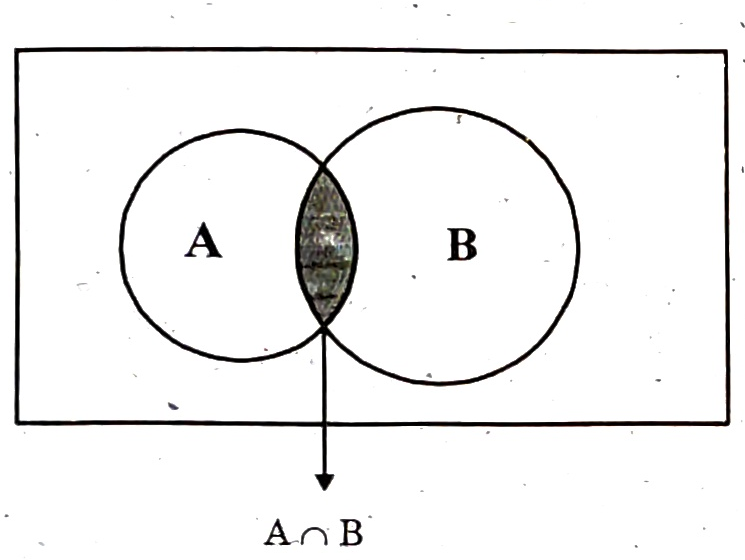
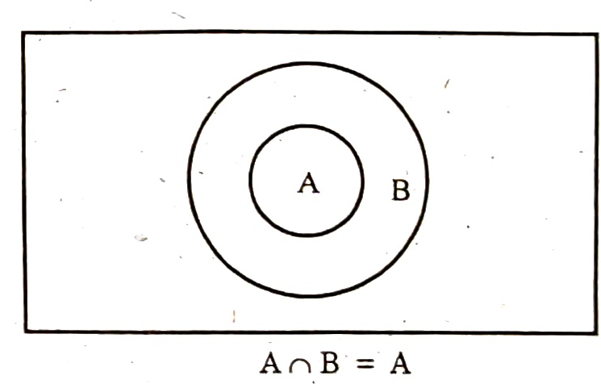
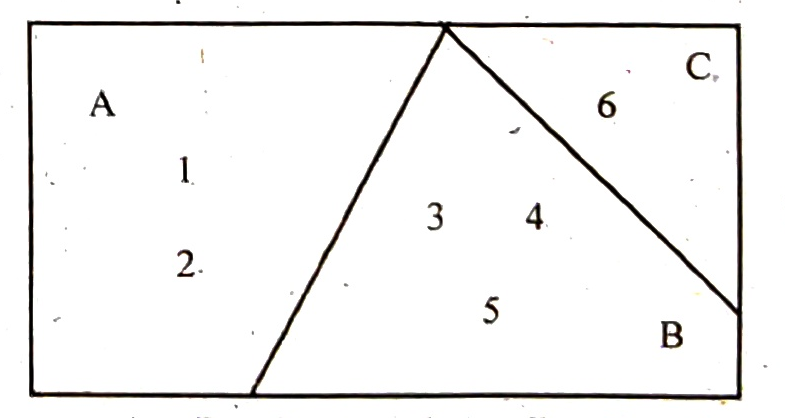

{kind=link}
Chapter 9 Probability · printed page 15 (scan 5) — §9.9 Not Mutually Exclusive Events, §9.10 Exhaustive Events, §9.11 A or B, §9.12 A and B; Figures 2–4
9.9. NOT MUTUALLY EXCLUSIVE EVENTS
The events are called not mutually exclusive if they have at least one outcome common between them. If A and B are not mutually exclusive events, then $A \cap B \neq \phi$. Similarly A, B and C are not mutually exclusive events if $A \cap B \cap C \neq \phi$. Thus they must have at least one common point between them. Consider a sample space :
$S \;\; = \;\; \{\, 1, 2, 3, 4, 5, 6, 7, 8, 9, 10, 11 \,\}$
Let the event$A \; = \; \{\, \text{prime numbers} \,\} \; = \; \{\, 2, 3, 5, 7, 11 \,\}$
and$B \; = \; \{\, \text{odd faces} \,\} \qquad\;\; = \; \{\, 1, 3, 5, 7, 9, 11 \,\}$
Here$A \cap B \; = \; \{\, 3, 5, 7, 11 \,\}$
Thus $A \cap B \neq \phi$ i.e, $A \cap B$ exists. Here, A and B are not mutually exclusive events. $A \cap B$ consists of outcomes which are common to both A and B. Figure-2 shows a venn diagram in which A and B are not mutually exclusive events. Some area under A is common with B. If the event A is a part of the event B, then $A \cap B = A$. This is shown in Figure-3.


9.10. EXHAUSTIVE EVENTS
When a sample space S is partitioned into some mutually exclusive events such that their union is the sample space itself then the events are called exhaustive events or collectively exhaustive events. Suppose a die is rolled and the sample space is
$S \;\; = \;\; \{\, 1, 2, 3, 4, 5, 6 \,\}.$
Let$A \; = \; \{\, 1, 2 \,\}$
$B \; = \; \{\, 3, 4, 5 \,\}$
$C \; = \; \{\, 6 \,\}$

Figure-4
Here the events A, B and C are mutually exclusive because $A \cap B \cap C = \phi$ and $A \cup B \cup C = S$. Figure-4 shows three events A, B and C which are exhaustive.
9.11. A or B
The term A or B is very important in probability theory. The term 'A or B' is used for two events A and B when they are mutually exclusive and we are interested to know the probability of the event "A or B". For this purpose the symbol $A \cup B$ is used. It must be remembered that the symbol $A \cup B$ is also used for the event "A or B or both", when A and B are not mutually exclusive.
9.12. A and B
The term 'A and B' is used for the event which consists of the points which are common to both A and B. In set theory language, the symbol $A \cap B$ is used for A and B. The symbol $A \cap B$ means intersection of A and B.